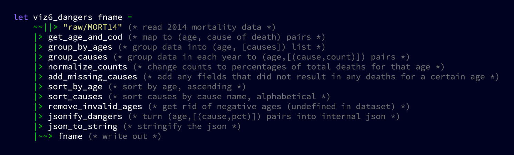

Over 41 gigabytes of raw text data were analyzed for the purposes of this project. The functional programming language OCaml was used due to its highly expressive syntax, incredible speed, and top-notch power.
That's over 100 million (102,696,714 to be exact) deaths analyzed—records exist for every person who officially died in the United States from 1968 up to 2014.
Many thanks to the US Center of Disease Control and Prevention (CDC) for this fantastic dataset.
For each visualization, the data was sytematically read, crunched, reshaped, and saved to the disk as JSON files which directly translate to the data plotted using the javascript libraries Cytoscape.js and Plotly.js.
An example pipeline is as follows:
The data is first read into a list. This list is then passed through transformation functions that sequentially condense and extract the desired data for plotting.
After the transformations are complete, the list is rendered as JSON and saved out, where it is retrieved at a later time by the frontend scripts that render the visualizations.
Depending on how much data was used for any given visualization, processing took anywhere from 30 seconds to roughly 15 minutes.
The data provided by the CDC contains multiple cause of death records. Each death is recorded with up to 20 pre-existing conditions that may have led to the subject's ultimate demise.
In the visualization below, these connections are visualized in a graph. Here nodes represent primary causes of death, and edges represent any pre-existing conditions listed for each subject.
The weight of nodes and edges corresponds to their frequency of occurrence in the 2014 dataset.
As medical technology advances and our understanding of biology increases, the effective danger of different maladies waxes and wanes.
The following visualization demonstrates this effect. From 1968 to 2014, each of the ~20 causes of death (as defined by the CDC) is shown with the total percentage of deaths that it is responsible for in each year.
We all know that life expectancy has increased more-or-less constantly over the past century, but how exactly has it progressed?
Mean age at death and life expectancy at birth are not the same statistic. How do they differ?
Moreso, what effects do relationship statuses have on age at death?
What is the mean age of those killed by a certain ailment?
How has medical technology influenced this characteristic since 1968?
There's a general consensus that the more educated one is, the longer they are likely to live.
This is influenced by a number of factors—for example, a highly educated individual is less likely to smoke than a high-school dropout.
Is this a misconception?
When is one likely to be killed by a given cause?
Are different age groups in danger from different reasons? i.e. What kills teenagers? How about the elderly?
Time for a little statistical fun.
The following visualizations compiled all 100+ million death records into Probability Density Functions and their corresponding Cumulative Distribution Functions.
An example query that could be andwered by these models is: If I died from cancer, how probable is it that I was between 20 and 30 years old?
The US is comprised of a collection of 50 states, each of which has a unique culture and history.
As such, people die at different ages from different diseases in different places.
For example, Alaska is the 'final frontier', the last salvation for those longing for the wild west. They die young, usually.